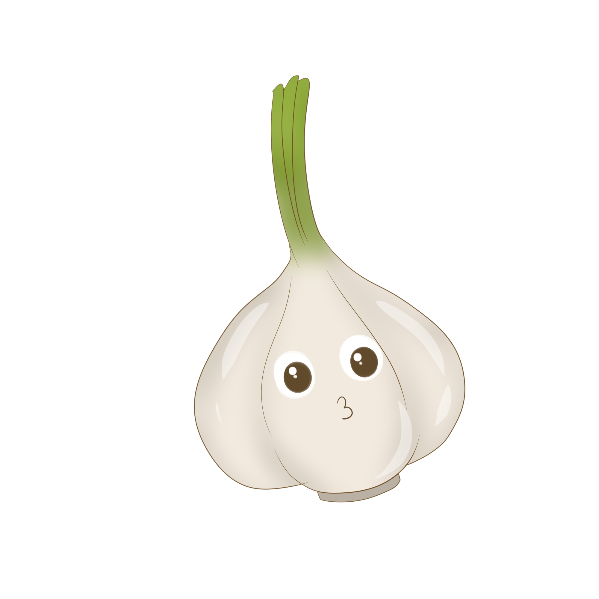
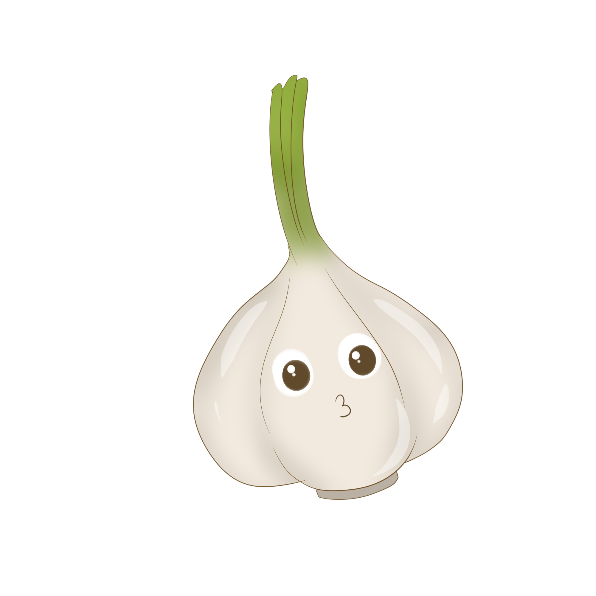

Congratulations!
You proved to be a great veggie smasher and as a reward you get to see this super secret guacamole recipe. Never ever share it with anybody else unless their smashing skills have been checked.
 

INGREDIENTS
- 3 large garlic cloves, unpeeled
- 3 ripe large avocados
- 1 small tomato, seeded, juiced and diced (about 1/3 cup)
- 1/4 cup coarsely chopped cilantro
- 1 jalapeño pepper, stemmed, seeded and minced
- 1 tablespoon fresh lime juice, plus more if desired (you'll need about 1/2 lime)
- 1/2 teaspoon salt, plus more to taste
Cooking instructions:
- Begin by roasting the garlic: place the unpeeled garlic in a small skillet over medium heat. Cook, turning occasionally, until soft and blackened in spots, 10 to 15 minutes. Cool, then slip off the skins, and mash with a fork..
- Cut the avocados in half lengthwise. Carefully strike the pits with the edge of a sharp knife, then twist and loosen to remove. Holding each avocado half in the palm of your hand, use a butter knife to cut a grid in the flesh. Use a spoon to scoop the cubes of flesh out of the skin and into a medium bowl.
- Add the roasted garlic, diced tomato, cilantro, jalapeño, lime juice and salt. Coarsely mash everything together, being careful to leave some chunks. Taste and add more salt and lime juice if desired.
- Transfer to a bowl and serve with tortilla chips.